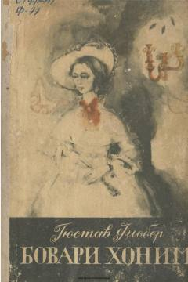

BXEmma Bovari hayoti va ruhiy iztiroblari tasvirlangan jahon adabiyoti durdonasi.
Gustav Floberning ushbu mashhur romani Emma Bovari ismli ayolning hayoti, orzulari va jamiyatdagi o'rni haqida hikoya qiladi. Asar inson ruhiyatining murakkabliklari va kundalik hayotning zerikarli realligi o'rtasidagi ziddiyatlarni chuqur ochib beradi.